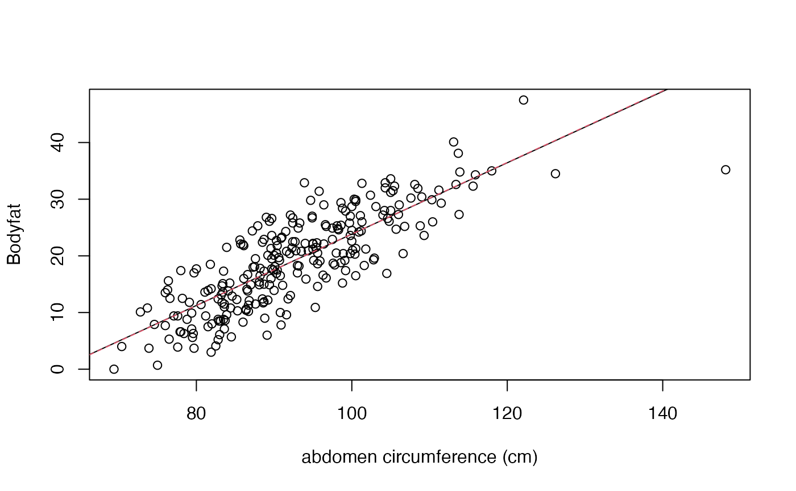

Lists estimates of the percentage of body fat determined by underwater weighing and various body circumference measurements for 252 men. Accurate measurement of body fat is inconvenient/costly and it is desirable to have easy methods of estimating body fat that are not inconvenient/costly.
A data frame with 252 observations on the following 15 variables.
a numeric vector for the density determined from underwater weighing
percent body fat from Siri's (1956) equation
age of individual in years
weight of the individual in pounds
height of individual in inches
neck circumference in centimeters (cm)
chest circumference (cm)
abdomen circumference (cm)
hip circumference (cm)
thigh circumference (cm)
knee circumference (cm)
ankle circumference (cm)
bicep (extended) circumference (cm)
forearm circumference (cm)
wrist circumference (cm)
These data are used to produce the predictive equations for lean body weight given in the abstract "Generalized body composition prediction equation for men using simple measurement techniques", K.W. Penrose, A.G. Nelson, A.G. Fisher, FACSM, Human Performance Research Center, Brigham Young University, Provo, Utah 84602 as listed in _Medicine and Science in Sports and Exercise_, vol. 17, no. 2, April 1985, p. 189. (The predictive equations were obtained from the first 143 of the 252 cases that are listed below). The data were generously supplied by Dr. A. Garth Fisher who gave permission to freely distribute the data and use for non-commercial purposes.
A variety of popular health books suggest that the readers assess their health, at least in part, by estimating their percentage of body fat. In Bailey (1994), for instance, the reader can estimate body fat from tables using their age and various skin-fold measurements obtained by using a caliper. Other texts give predictive equations for body fat using body circumference measurements (e.g. abdominal circumference) and/or skin-fold measurements. See, for instance, Behnke and Wilmore (1974), pp. 66-67; Wilmore (1976), p. 247; or Katch and McArdle (1977), pp. 120-132).#
Percentage of body fat for an individual can be estimated once body density has been determined. Folks (e.g. Siri (1956)) assume that the body consists of two components - lean body tissue and fat tissue. Letting
D = Body Density (gm/cm^3) A = proportion of lean body tissue B = proportion of fat tissue (A+B=1) a = density of lean body tissue (gm/cm^3) b = density of fat tissue (gm/cm^3)
we have D = 1/[(A/a) + (B/b)] and solving for B we find B = (1/D)*[ab/(a-b)] - [b/(a-b)].
Using the estimates a=1.10 gm/cm^3 and b=0.90 gm/cm^3 (see Katch and McArdle (1977), p. 111 or Wilmore (1976), p. 123) we come up with "Siri's equation":
Percentage of Body Fat (i.e. 100*B) = 495/D - 450.#
Volume, and hence body density, can be accurately measured a variety of ways. The technique of underwater weighing "computes body volume as the difference between body weight measured in air and weight measured during water submersion. In other words, body volume is equal to the loss of weight in water with the appropriate temperature correction for the water's density" (Katch and McArdle (1977), p. 113). Using this technique,
Body Density = WA/[(WA-WW)/c.f. - LV]
where WA = Weight in air (kg) WW = Weight in water (kg) c.f. = Water correction factor (=1 at 39.2 deg F as one-gram of water occupies exactly one cm^3 at this temperature, =.997 at 76-78 deg F) LV = Residual Lung Volume (liters)
(Katch and McArdle (1977), p. 115). Other methods of determining body volume are given in Behnke and Wilmore (1974), p. 22 ff.
Measurement standards are apparently those listed in Behnke and Wilmore (1974), pp. 45-48 where, for instance, the abdomen circumference is measured "laterally, at the level of the iliac crests, and anteriorly, at the umbilicus".)
Bailey, Covert (1994). Smart Exercise: Burning Fat, Getting Fit, Houghton-Mifflin Co., Boston, pp. 179-186.
Behnke, A.R. and Wilmore, J.H. (1974). Evaluation and Regulation of Body Build and Composition, Prentice-Hall, Englewood Cliffs, N.J.
Siri, W.E. (1956), "Gross composition of the body", in Advances in Biological and Medical Physics, vol. IV, edited by J.H. Lawrence and C.A. Tobias, Academic Press, Inc., New York.
Katch, Frank and McArdle, William (1977). Nutrition, Weight Control, and Exercise, Houghton Mifflin Co., Boston.
Wilmore, Jack (1976). Athletic Training and Physical Fitness: Physiological Principles of the Conditioning Process, Allyn and Bacon, Inc., Boston.
data(bodyfat) bodyfat.bas = bas.lm(Bodyfat ~ Abdomen, data=bodyfat, prior="ZS-null") summary(bodyfat.bas)#> P(B != 0 | Y) model 1 model 2 #> Intercept 1 1.0000 1.000000e+00 #> Abdomen 1 1.0000 0.000000e+00 #> BF NA 1.0000 1.039211e-57 #> PostProbs NA 1.0000 0.000000e+00 #> R2 NA 0.6617 0.000000e+00 #> dim NA 2.0000 1.000000e+00 #> logmarg NA 131.2089 0.000000e+00plot(Bodyfat ~ Abdomen, data=bodyfat, xlab="abdomen circumference (cm)")betas = coef(bodyfat.bas)$postmean # current version has that intercept is ybar betas[1] = betas[1] - betas[2]*bodyfat.bas$mean.x abline(betas)